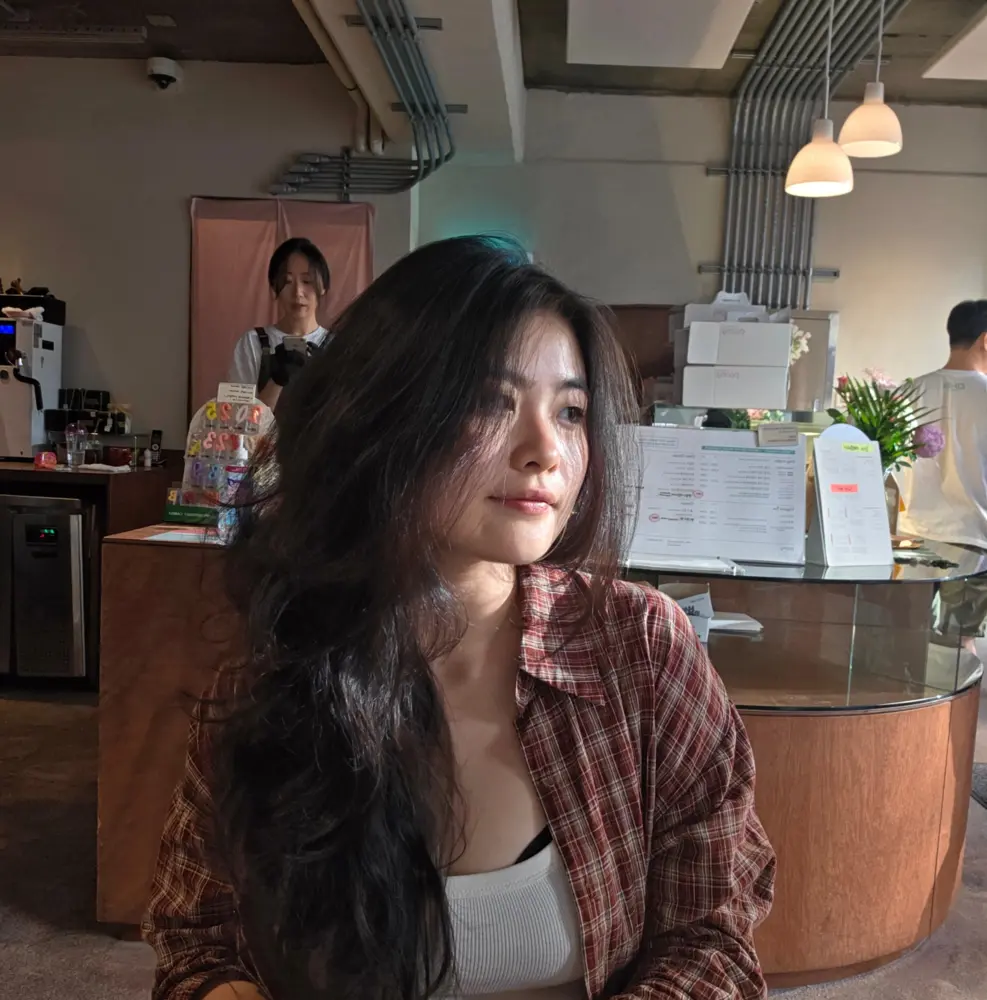

AI learning tools
Leading the development of an English-learning voicebot at Ark Academy, including architecture, conversation design, workflow automation, deployment, and iteration.
Adaptive AI · Human-centered systems
I’m Sia, a tech lead and incoming M.Sc. student in Intelligent Adaptive Systems. I’m interested in how AI can adapt from limited interaction, give useful support under uncertainty, and gradually step back as people gain skill.
Choose a stage to explore the loop.

A little about me
I’ve taught English, mentored software students, built education products, and studied how people respond to AI feedback. Those experiences are why I care about systems that adapt to individuals without taking over.
I spent a total of 14 years in India, moving back and forth between India and Korea, and graduated high school there. Hamburg is the next stop.
I only play ranked, usually as Lux or Mel. I have been moving between Bronze and Silver for years, but I am still trying very hard to reach Gold.
Leading the development of an English-learning voicebot at Ark Academy, including architecture, conversation design, workflow automation, deployment, and iteration.
Evaluating prompts and model outputs in programming and data science, with experience in instruction tuning and human preference evaluation.
An undergraduate exploration of personalized visual feedback for Korean pronunciation using lightweight, browser-based AR. Accepted for an oral presentation at HCI Korea 2026.
Repository ↗How much interaction does a system need before a personal model becomes more useful than a population model?
How should an assistive system behave before it fully understands a person’s intent, ability, or preferences?
Support should change as people change. I’m interested in assistance that fades, transfers control, and encourages independence.
Incoming M.Sc. student in Intelligent Adaptive Systems.
Tech Lead for AI-powered educational tools, product research, usability testing, and full-stack delivery.
AI Data Evaluator working across STEM, code, and human preference evaluation.
Research assistant, Python teaching assistant, and academic mentor in computing courses.
Let’s talk
If you’re exploring a related research question or building something thoughtful in this space, I’d love to hear from you.